This paper takes YSM 2.6.4 (Forge, Minecraft 1.20.1) as the primary research target and conducts a systematic reverse engineering analysis of the new YSM release along four lines: its encryption system, serialization protocol, geometry inversion, and network communication. The research materials include encrypted model samples exported from the client, plaintext model projects, intermediate data from each stage of the decryption and decompression chain, and the native DLL.
The study shows that the new YSM no longer follows the AES-CBC scheme implemented in the Java layer in earlier versions. Instead, it builds a multi-stage protection chain in the native layer consisting of a modified CityHash64, XChaCha20 with chained parameter updates, MT19937_64 stream-key XOR, and a modified Zstd. The decompressed result is not any known format either, but a compact serialization stream designed for the runtime object system. Its version number divides it into three mutually incompatible protocol families. In the latest-generation format, the model project is pre-rendered into pure geometric vertices, and project-level information such as origin, size, pivot, rotation, and per-face UV boxes is completely erased. This is also the greatest challenge in restoring it back into an editable project.
This paper presents a complete restoration approach for this format. At the decryption layer, we penetrate VMProtect through dynamic debugging and reconstruct the constants and control flow of the modified CityHash and modified Zstd by comparing them against official implementations. At the deserialization layer, we use sample differencing and version comparison to map out the object skeletons and field thresholds of the three format generations. At the reverse-rendering layer, we design a complete reverse-rendering algorithm based on the properties of Blockbench cubes. At the network protocol layer, we analyze the handshake on the Custom Payload channel and reconstruct the purpose of its packets, as well as the model transmission and encryption process. This paper also reviews the encryption structures of the historical V1 and V2 formats to complete the evolution history of the three YSM encryption generations.
Compared with existing open-source projects that rely on heuristic string searches and can only decrypt a single format, this work establishes a complete technical picture across encryption algorithms, serialization protocols, geometry restoration, and network communication. It verifies the fundamental constraint that "the client must be able to decrypt", under which any client-side encryption scheme can ultimately be penetrated. This paper can provide methodological support for Minecraft mod security analysis, reverse engineering research on complex rendering mods, and DRM system design.
Yes Steve Model (YSM) is a Minecraft model-loading mod. Its models are based on the Bedrock Edition model animation architecture, Entity Modeling and Animation.
Since early versions, YSM has included a model encryption system. It allows model creators to use the DRM system provided by YSM to encrypt original model files into YSM-format files, which can only be read by YSM and cannot be opened in model editors such as Blockbench.
The earliest YSM versions (1.1.5-) provided simple Java-layer encryption methods such as AES-CBC to encrypt Blockbench project files, but aside from simple Java obfuscation, they provided no real protection. Attack methods soon appeared, including directly reversing the decryption logic and using Mixin to attach export code to the decryption method and dump decrypted files directly. After many attack methods appeared, the YSM author open-sourced the old YSM version (1.1.5), with the source code published at YesSteveModel/LgeacyYSM.
To solve this problem, starting from version 1.2.0, the YSM author rewrote the core model-protection logic in C++, compiled it into DLL and SO binaries, protected it with VMProtect packing and virtualization, and also rewrote rendering in C++. As a result, plaintext model data never passes through the Java layer. With virtualization, encrypted models remained absolutely secure for a long period. To further improve security, a third-generation encryption scheme was introduced in the 2025 releases. The model is fully pre-rendered in advance, only the necessary vertex information is kept, and no original Blockbench project resources are retained. This is equivalent to compiling the project file into a custom YSM format. With VMProtect virtualization, all relevant code is executed by a virtual machine and completely hidden from decompilation. This immeasurably increases the reverse engineering cost and creates an overwhelmingly asymmetric confrontation between protection and reverse engineering.
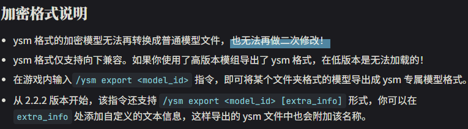
So, is this third-generation YSM encryption scheme truly absolutely secure? What algorithms and techniques does third-generation encryption use? Is it possible to restore the original project from vertex data after large amounts of necessary information have already been erased by pre-rendering?
To investigate these questions, our team conducted this research.
The research target is YSM 2.6.4 (Forge, Minecraft 1.20.1), which can be downloaded from Modrinth.
After decompiling with Recaf and performing a simple static analysis, we can see that the mod has no protection other than simple Java obfuscation. However, the initialization logic, model encryption and decryption, and rendering logic are all native methods. The entire process from reading the encrypted model file to rendering it on screen executes inside native code, which means the original model project cannot be exported by hooking any Java method.
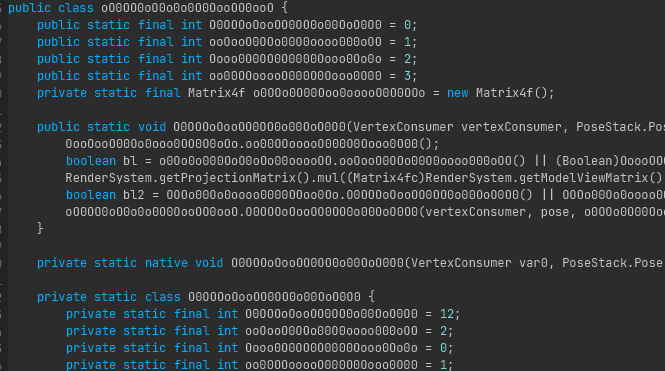
The native components are split into DLL and SO binaries for Windows and Linux respectively. Both use VMProtect 3.9 packing and virtualization protection. Here, packing means that the code segment is only released after certain environment checks, such as virtual machine and debugger detection. Although the released code can be dumped, the dump still contains extensive hidden system function calls (IAT encryption), VMP virtual-machine code segments, VMP string encryption, calling-convention obfuscation that prevents normal pseudocode generation, and damaged control-flow graphs (CFGs). Therefore, key code must first be located through dynamic debugging.
When x64dbg is attached at runtime, it is detected by VMProtect's debugger checks, causing execution to be refused. To bypass VMProtect kernel-level anti-debugging, one can attach after the native component has finished loading, or use TitanHide to hide debugger characteristics at the kernel level. Set a conditional breakpoint on CreateFileW, trace from model loading (reading the .ysm file), and obtain the returned file handle. After recording the returned handle, set a conditional breakpoint on ReadFile matching that handle. When ReadFile returns, take the output buffer address and set a hardware breakpoint to trace data flow. After obtaining the data flow, trace data transfer through breakpoints on memcpy or memmove, and eventually the function implementing encryption or decryption can be reached.
CityHash is a hash function. It is mainly designed for string hashing and performs extremely well on short strings on modern CPU architectures.
xxxxxxxxxx/* C-like pseudocode generated by IDA */v56 = kMul * ((kMul * (v37 ^ v42)) ^ v37 ^ ((kMul * (v37 ^ v42)) >> 47));v57 = kMul * ((kMul * (v38 ^ v44)) ^ v38 ^ ((kMul * (v38 ^ v44)) >> 47));v58 = kMul * (v57 ^ (v57 >> 47)) + v34 - 0x6E50EF7FD354DA5BLL * (v32 ^ (v32 >> 47));v59 = kMul * (v58 ^ (v43 - 0x21F0911F6424546FLL * (v56 ^ (v56 >> 47))));v4 = kMul * ((kMul * (v59 ^ v58 ^ (v59 >> 47))) ^ ((kMul * (v59 ^ v58 ^ (v59 >> 47))) >> 47));In the first cryptographic algorithm being passed into, the pattern ((A * (B ^ C)) >> 47) appears repeatedly and strongly matches the ShiftMix algorithm in CityHash. By comparing it section by section with the official google/cityhash implementation, we confirmed that the core differences between the YSM version and standard CityHash64 are the replacement of three constants (K0, K1, K2) and the multiplier constant kMul in the key function Hash128to64. The remaining control flow and operation logic are consistent.
These constants act as multipliers/addends to randomly diffuse all bits. YSM modifies these constants, which changes the hash-function mapping, makes the input and output inconsistent with the official implementation, and prevents heuristic searches for the algorithm.
xxxxxxxxxx// Officialstatic const uint64 k0 = 0xc3a5c85c97cb3127ULL;static const uint64 k1 = 0xb492b66fbe98f273ULL;static const uint64 k2 = 0x9ae16a3b2f90404fULL;inline uint64 Hash128to64(const uint128& x) { const uint64 kMul = 0x9ddfea08eb382d69ULL; uint64 a = (Uint128Low64(x) ^ Uint128High64(x)) * kMul; a ^= (a >> 47); uint64 b = (Uint128High64(x) ^ a) * kMul; b ^= (b >> 47); b *= kMul; return b;}xxxxxxxxxx// YSMk0 = 0xE4986A230E5AAA17;k1 = 0x91AF10802CAB25A5;k2 = 0xAF29CE778879D9C7;inline uint64 Hash128to64(const uint128& x) { const uint64 kMul = 0xDE0F6EE09BDBAB91uLL; // Modified // Algorithm Modified. return kMul * ShiftMix(kMul * (ShiftMix((Uint128Low64(x) ^ Uint128High64(x)) * kMul) ^ Uint128Low64(x)));}After analyzing references to the CityHash function, we can see that besides model-loading integrity verification, CityHash is used almost everywhere YSM needs data-integrity checks, such as communication and cache verification. Each use has a different seed, which can be seen by inspecting the corresponding references.
xxxxxxxxxx0xD017CBBA7B5D3581 // MT19937 seed derivation0xA62B1A2C43842BC3 // XChaCha20 state initialization0xD1C3D1D13A99752B // Server cache decryption0x9E5599DB80C67C29 // File integrity verification0xEE6FA63D570BD77B // Network packet verification0xF346451E53A22261 // Cache integrity verification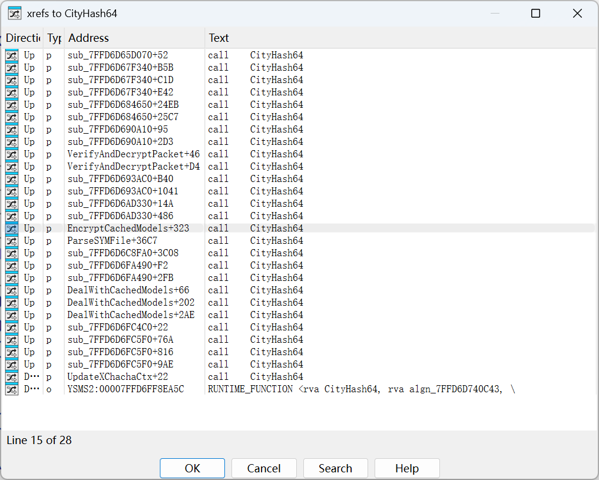
The .ysm file has 64 bytes of extra data at the end. Analysis shows that the first 32 bytes are the encryption key, which is used in all subsequent cryptographic algorithms. The next 24 bytes are the IV, used to randomize the ciphertext and also used in all subsequent cryptographic algorithms. The final 8 bytes are the CityHash64 result of the rest of the file excluding this 64-byte trailer, with seed 0x9E5599DB80C67C29, used for the first integrity verification step.
After file integrity is verified, the key and IV are extracted and passed into subsequent cryptographic functions.
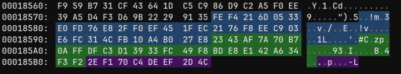
XChaCha20 is a variant of the ChaCha20 stream cipher. Its core improvement is extending the original 64-bit nonce to 192 bits.
After verification, the data is decrypted with XChaCha20. YSM modifies the XChaCha20 encryption and decryption process.
First, it computes the number of rounds through 10 * (hash % 3) + 10 (= 10/20/30), then computes the block size through ((hash & 0x3F) | 0x40) << 6. After each data block is processed, it does not continue using the original ChaCha context. Instead, it computes CityHash over the current decrypted block, uses that hash result to recompute the round count and block size for the next block, and updates the ChaCha context. This makes the decryption parameters of each block depend on the plaintext digest of the previous block.
This chained decryption increases attack cost to some extent, but because the entire process is completed in a single loop, its anti-reverse-engineering effect is limited.
xxxxxxxxxxdef xchacha_update_state(ctx: XChaChaCtx, hash_v: int): hash_v &= 0xffffffffffffffff ctx.rounds = 10 * (hash_v % 3) + 10 lo = hash_v & 0xffffffff hi = (hash_v >> 32) & 0xffffffff for i in range(4, 16, 1): if i % 2 == 0: ctx.input[i] ^= lo else: ctx.input[i] ^= hi return ((hash_v & 0x3f) | 0x40) << 6
def YSMChaCha(data: bytes, key: bytes, iv: bytes): # Obtain the first round hash = CityHash64(key + iv) # Seed is 0xA62B1A2C43842BC3 next_round_size = (hash & 0x3f | 0x40) << 6 blockPointer = 0 # Setup ctx = XChaChaCtx() result = bytearray() xchacha_keysetup(ctx, key, iv)
# Decryption loop while blockPointer < len(data): if blockPointer + next_round_size > len(data): next_round_size = len(data) - blockPointer
enc1 = data[blockPointer:blockPointer + next_round_size] blockPointer += next_round_size
dec1 = xchacha_decrypt_bytes(ctx, enc1) # Plaintext after decryption, used to determine the next decryption state res_hash = CityHash64(dec1) # Seed is 0xA62B1A2C43842BC3 next_round_size = xchacha_update_state(ctx, res_hash)
result += bytearray(dec1) return bytes(result)After XChaCha20 decryption is complete, the decrypted data is passed into the next cryptographic function, MT19937_64 stream-key XOR. It uses the standard std::mt19937_64 (64-bit Mersenne Twister) PRNG algorithm to generate a stream cipher.
The seed is computed from Key || IV (56 bytes) using CityHash64 with seed 0xD017CBBA7B5D3581. Each round takes 8 bytes of stream key from MT19937 (little-endian) and XORs it byte by byte with the XChaCha20 decryption result.
The first 2 bytes at the head of the data after MT19937 XOR form a little-endian 16-bit integer. After applying bitwise AND with the 0x3FF mask, this gives the Nonce length n (maximum 1023). After skipping 2 + n bytes, the remainder is the final compressed data. In the implementations for models, communication packets, and cache encryption, YSM uniformly uses random bytes to pad the header. This strategy effectively eliminates the feature where identical plaintext would produce identical ciphertext in the extreme case of fixed Key and IV, significantly improving resistance against replay and pattern analysis.
xxxxxxxxxx// Copy Key and IVstd::vector<uint8_t> key_iv(56);std::memcpy(key_iv.data(), key, 32);std::memcpy(key_iv.data() + 32, iv, 24);
// Compute seed: CityHash64(Key || IV), seed is 0xD017CBBA7B5D3581uint64_t seed = CityHash64(reinterpret_cast<const char*>(key_iv.data()), key_iv.size(),0xD017CBBA7B5D3581);
// Initialize standard MT19937-64std::mt19937_64 mt(seed);std::vector<uint8_t> result(data.size());
for (size_t i = 0; i < data.size(); ++i) { if (i % 8 == 0) { uint64_t rnd = mt(); // Take 8 random bytes for (int j = 0; j < 8 && i + j < data.size(); ++j) { result[i + j] = data[i + j] ^ ((rnd >> (j * 8)) & 0xFF); } }}After MT19937 decryption, the data enters the next processing stage. Its feature 0xFD2FB528, the magic number of the ZSTD compression algorithm, can be clearly seen.
xxxxxxxxxx/* C-like pseudocode generated by IDA */if ( *(_DWORD *)src != 0xFD2FB528 ){ n8_1 = 0xFFFFFFFFFFFFFFF6uLL; if ( (*(_DWORD *)src & 0xFFFFFFF0) != 0x184D2A50 ) goto LABEL_36; n8_1 = 8; if ( srcSize < 8 ) goto LABEL_36; zfhPtr->frameContentSize = *((unsigned int *)src + 1); zfhPtr->frameType = ZSTD_skippableFrame;LABEL_35: n8_1 = 0; goto LABEL_36;}After the Zstd header is parsed, execution reaches the method that parses block information, but this method is not a standard Zstd implementation either.
For block_header, YSM rearranges the fields. Its format differs greatly from the official version, and it also XOR-encrypts the block size. The encrypted block size is spliced together from two separate segments.
xxxxxxxxxx// block_header format
// Officialbit 0: lastBlockbit 1-2: blockTypebit 3+: blockSize
// YSMbit 7: lastBlockbit 5-6: blockTypebit 0-4 + high 8 bits: blockSize
// Block size parsing
// OfficialcSize = blockHeader >> 3
// YSMcSize = ((blockHeader & 0x1F) << 16) | (blockHeader >> 8)) ^ 0xD4E9
// === Official ZSTD_getcBlockSize ===static size_t ZSTD_getcBlockSize(const void* src, size_t srcSize, blockProperties_t* bpPtr) { U32 cBlockHeader = MEM_readLE24(src); bpPtr->lastBlock = cBlockHeader & 1; bpPtr->blockType = (cBlockHeader >> 1) & 3; bpPtr->origSize = (cBlockHeader >> 3) & 0x1FFFFF; return cBlockHeader >> 3;}
// === YSM ZSTD_getcBlockSize ===static size_t ZSTD_getcBlockSize(const void* src, size_t srcSize, blockProperties_t* bpPtr) { U32 cBlockHeader = MEM_readLE24(src); bpPtr->lastBlock = (cBlockHeader >> 7) & 1; // bit 7 bpPtr->blockType = (cBlockHeader >> 5) & 3; // bit 5-6 bpPtr->origSize = (cBlockHeader & 0x1F) << 16 | (cBlockHeader >> 8) ^ 0xD4E9; return ((cBlockHeader & 0x1F) << 16) | (cBlockHeader >> 8) ^ 0xD4E9;}At the same time, YSM also reorders the opcode values of block types. This causes official Zstd to recognize instructions incorrectly, causing the decompression process to output a large amount of erroneous or undecompressed data.
| Opcode | Standard Instruction | YSM Instruction |
|---|---|---|
0 | bt_raw (copy as-is) | bt_compressed (compressed block) |
1 | bt_rle (run-length encoding) | bt_rle (run-length encoding) |
2 | bt_compressed (compressed block) | bt_reserved (reserved) |
3 | bt_reserved (reserved) | bt_raw (copy as-is) |
After modifying the implementation according to YSM semantics, decompression finally succeeds and produces the uncompressed data.
After decryption and decompression are complete, the data appears to be plaintext, but it has not become any valid format or a Blockbench project.
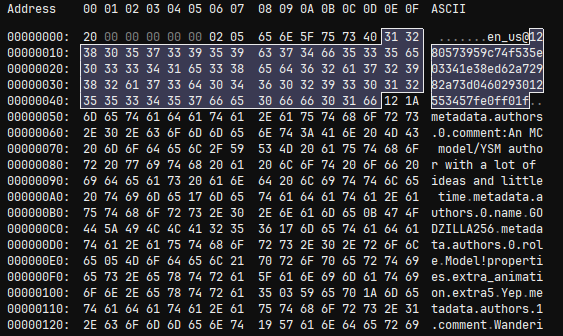
Data after decompression
Clearly, this is YSM's final custom format, namely a custom object serialization stream. It is consumed internally in native code and does not even reach the JVM. However, after comparing data from multiple models, we found that the first decrypted header value, 20, is not a magic number but a format version. This number is related to the model release time: newer models use newer YSM versions, meaning they are exported with higher format versions.
After comparing a large number of models downloaded from the YSM Discord, we preliminarily identified two watershed points in this version number, dividing it into three ranges. In other words, the format underwent two major changes, and both major changes almost rewrote the entire format.
When a file is laid out, many small bytes such as 0x04 and 0x07 can be seen expressing string lengths. However, when a string length exceeds 127, the high bit of the leading byte becomes 1. This is the VarInt pattern, indicating that YSM's consumption model is very likely based on the consumption pattern of ByteBuf in Minecraft's PacketBuffer. After further analysis, we found that its read mode implements four basic data types: VarInt, VarLong, VarString (UTF-8), and ByteArray, all consistent with Mojang's implementations in FriendlyByteBuf/PacketBuffer.
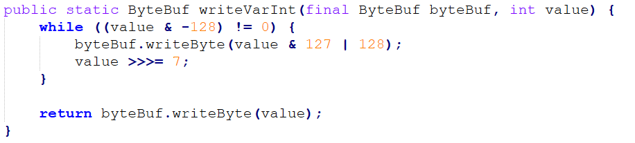
The VarInt writing method in the Minecraft protocol
The first-generation format was a breakthrough point. Because YSM had just experienced attacks against the previous AES encryption generation, many models had been decrypted. The authors of those decrypted models urgently migrated to the latest native encryption, which gave us many paired samples of old and new formats and created extremely favorable conditions for analysis.
Combining native debugging with one sample, after reading format, execution enters the consumption flow. The first value is a VarInt, followed by a sequence of zero bytes, and that value is precisely the length of those zero bytes. This design is puzzling. We preliminarily interpret it as some kind of obfuscating reserved field and refer to this segment as SkipPrefix.
Looking at the following data, there are multiple identical structures: an integer N, followed by N repeated structures. This is a length-prefixed array. Many packets in the Minecraft protocol use a similar encoding pattern. Each group starts with a string (an internal ID or name), contains a 0x01 in the middle, and then contains a JsonElement. By comparing it with plaintext models, we can determine that this is the model JSON data.
The third segment is special. Although it can be seen to be an image because it has a PNG header, it is not the original PNG. Instead, it is an RGBA pixel stream corresponding to the color of each pixel, followed by width and height. During decoding, it must be reassembled according to width and height.
There are six such length-prefixed arrays. After comparison, the format was finally fully identified:
xxxxxxxxxxSkipPrefix Length (Varint) + SkipPrefix-> ModelCount -> [ModelId + Marker(1) + Model] x N-> AnimationCount -> [AnimationId + Marker + Animation] x N-> TextureCount -> [TextureName + RGBA_Bytes + Width + Height] x N-> ModelTable: [ModelId -> ModelHash] x N-> AnimationTable: [AnimationId -> AnimationHash] x N-> TextureTable: [TextureName -> TextureHash] x N
The latter three arrays are tables mapping internal IDs or names to SHA-256 values. By comparing them with the Source SHA-256 list in the .ysm file header, called YSGPHeader, we can see that the resource paths listed there are indexed by SHA-256. This mapping table provides a correspondence table for restoring resources to their original file names. Extracting according to this table can restore the Blockbench project files.
In fact, parsing does not require this YSGPHeader, because in our later analysis, models distributed by the server do not have a YSGPHeader.
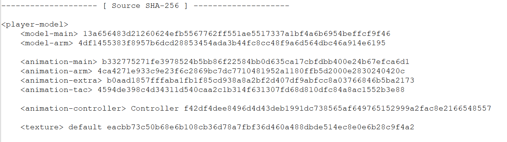
Source SHA-256 table in the YSM file header
The overall structure of this generation is not very different from the first generation, but each version has differences. For example, format 9 adds animation controllers, sound-effect structures, normals, specular information, and other data. After simply extending the first-generation structure, parsing can be completed.
Structurally, it additionally adds a Metadata field, which we call YSMJson, containing author information and other data. After analyzing multiple intermediate versions, we eventually obtained a general format:
xxxxxxxxxxSkipPrefixLen + SkipPrefixModels x N [id + marker + body]Animations x N [id + marker + body][format > 9] AnimationControllers x N + TableTextures x N [name + mainImage + subTextures][format > 9] Sounds x N + TableExtraTextures x N [avatarName + RGBA + W + H]ModelTable x NAnimationTable x NTextureTable x N (includes specialTextureHash)YSMJson
In the third-generation format, the order of resource blocks has been completely rearranged. This is a full refactor: audio and script files are moved to the very front, while models are moved to the end. Resource objects no longer rely on a trailing mapping table to associate with SHA-256 values, but carry their own sha256 field. Multiple new resource types are also introduced, such as SubEntities (vehicles, projectiles, and so on). In version 26, the layouts for vehicle and projectile textures are also split.
After some debugging and analysis, we obtained the general format of the latest third generation:
xxxxxxxxxxSoundFiles: [name + hash + bytes] x NFunctionFiles: [name + hash + bytes] x NLanguageFiles: [name + hash + nodeCount + key-value-pairs] x N-> SubEntities x N (format < 26: unified list; format >= 26: Vehicles + Projectiles split)-> Sentinel(1)-> Animations x N-> AnimationControllers x N-> TextureFiles x N (+ subTextures)-> Models x N-> YSMJson
In this generation, information, actions, and file mappings are all stored in YSMJson. The file mappings are extremely helpful for restoration work because they allow us to easily reconstruct the model's project structure.
xxxxxxxxxx{ "player": { "model": { "main": "models/main.json", "arm": "models/arm.json" }, "animation": { "main": "animations/main.animation.json", "arm": "animations/arm.animation.json", "extra": "animations/extra.animation.json", "tac": "animations/tac.animation.json" }, "animation_controllers": [ "controller/Controller.json" ], "texture": [ { "uv": "textures/default.png" } ] }}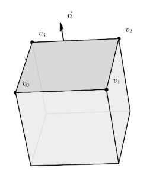
In the third-generation format, there is a very puzzling problem: in the extracted third-generation models, the Blockbench project's origin, size, pivot, rotation, and every face's UV box are all missing. Only the raw vertex coordinates, normals, and necessary UVs remain.
This means that in the new YSM versions, the model has already been pre-rendered during export, converting the Blockbench project into pure geometry data. In other words, the encryption side completely erases the project-file layer's structural information. Even after all deserialization is complete, the exported model is only a tangled cluster of vertices and cannot be restored in Blockbench as an editable project. This became the final means of protecting the model.
The only information we can obtain is: each face has a normal
The turning point came from a property of Blockbench models: Blockbench cubes are not arbitrary meshes. They have very strong geometric constraints:
In each cube's local coordinate system, it is axis-aligned;
The whole cube can rotate around its center on three axes. After rotation, the normals of its 6 faces become the three basis vectors of the cube's local coordinate system and their opposites in world space;
The UV of each face is a rectangle in texture space, and the rectangle's two edges correspond respectively to the two tangents of that face in the local coordinate system.
These properties make it possible to reconstruct the entire model from vertices, so we began designing a reverse-rendering algorithm.
Our first entry point was recovering the Rotation of the cube corresponding to each face.
To recover a rotated cube, we first need to know its orientation, that is, which positions its local axes point to in 3D world space. The normals already determine one set of directions, but the angle of rotation around the normal axis still cannot be determined. However, a property of Blockbench is that UV directions in texture coordinates must be parallel to two edges of the face. In other words, in the UV rectangle, only one edge changes in
By traversing the four adjacent edges of each face, we can determine which world-space direction an edge corresponds to based on the shape of its UV delta, thereby extracting the two tangents of that face. Thus, each face can provide three independent directions: the normal, the U tangent, and the V tangent.
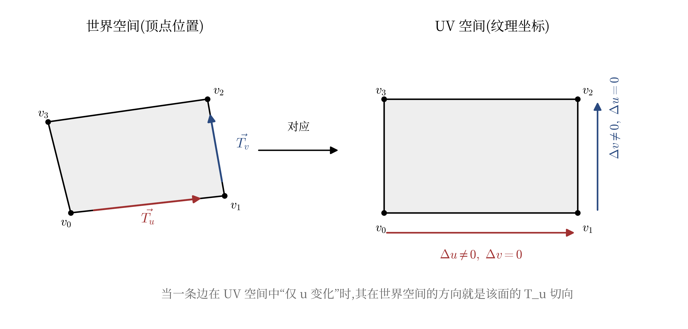
The left side shows an inclined face in 3D world space, and the right side shows its corresponding rectangle in texture space.
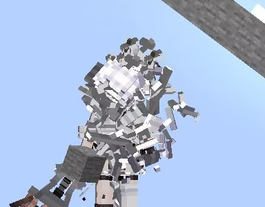
After obtaining the rays of all faces, we can deduplicate them through simple similarity analysis and obtain three directions, which are the three local axes of the cube. However, for some reason, the YSM author downgraded all original Double precision values to Float (including all values in the Function framework). Therefore, all floating-point precision in the exported pre-rendered model is lost, and the extracted three directions are often not completely correct. If they are used directly for calculation, errors appear, and after several transforms the errors are amplified exponentially, causing the model to collapse.
The solution is to use Gram-Schmidt orthogonalization. Select the first direction as the reference, remove from the second direction the component parallel to the first, and the remainder is strictly perpendicular to it. The third direction is simpler: it is the cross product of the first two.
The three processed directions constitute the correct rotation.
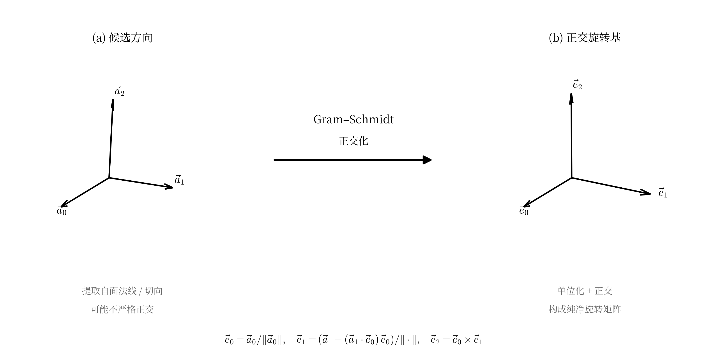
Gram-Schmidt repairing floating-point precision
This introduces several new questions: Which of the three directions corresponds to X, Y, and Z? What are their signs?
This is indeed a difficult problem, but we soon found a breakthrough: Blockbench's source file cube.js.
xxxxxxxxxxscope.faces.north.uv = calcAutoUV('north', [0, 1], [1, 1]);scope.faces.east.uv = calcAutoUV('east', [2, 1], [1, 1]);scope.faces.south.uv = calcAutoUV('south', [0, 1], [-1, 1]);scope.faces.west.uv = calcAutoUV('west', [2, 1], [-1, 1]);scope.faces.up.uv = calcAutoUV('up', [0, 2], [-1, -1]);scope.faces.down.uv = calcAutoUV('down', [0, 2], [-1, 1]);js/outliner/types/cube.js
The parameters of calcAutoUV specify the face's orientation in UV space (Facing), the axes (0=X, 1=Y, 2=Z), and the positive/negative direction given by the second parameter group. During rendering, CubeFace.UVToLocal() interpolates the UV coordinates back into 3D vertex positions. Example:
xxxxxxxxxxif (this.direction == 'east') { vector.x = to[0]; vector.y = Math.lerp(to[1], from[1], lerp_y); // V increases -> Y decreases vector.z = Math.lerp(to[2], from[2], lerp_x); // U increases -> Z decreases}After extracting the code for these six faces, we obtain a reverse-lookup scheme for the UV direction table of each cube face:
xxxxxxxxxxstatic void get_expected_uv_dirs(Vector3D local_normal, Vector3D& exp_U, Vector3D& exp_V) { Vector3D n = round_vec(local_normal); if (n.x == -1) { exp_U = { 0, 0, 1 }; exp_V = { 0, -1, 0 }; return; } if (n.x == 1) { exp_U = { 0, 0,-1 }; exp_V = { 0, -1, 0 }; return; } if (n.y == 1) { exp_U = {-1, 0, 0 }; exp_V = { 0, 0,-1 }; return; } if (n.y == -1) { exp_U = {-1, 0, 0 }; exp_V = { 0, 0, 1 }; return; } if (n.z == -1) { exp_U = {-1, 0, 0 }; exp_V = { 0, -1, 0 }; return; } if (n.z == 1) { exp_U = { 1, 0, 0 }; exp_V = { 0, -1, 0 }; return; }}The simplest solution is to calculate and score candidates one by one. There are 6 permutations times 8 sign combinations, for a total of 48 candidates. Generate the transform result for each of the 48 schemes, compare how well all face UV tangents match Blockbench's expected directions, and take the highest-scoring candidate.
At this point, we have successfully and completely recovered the cube's rotation.
Once rotation
Vertices in 3D world space can be distributed in any way. Even if we know this is a cube, we cannot directly determine its boundary in 3D world space. But as long as each vertex
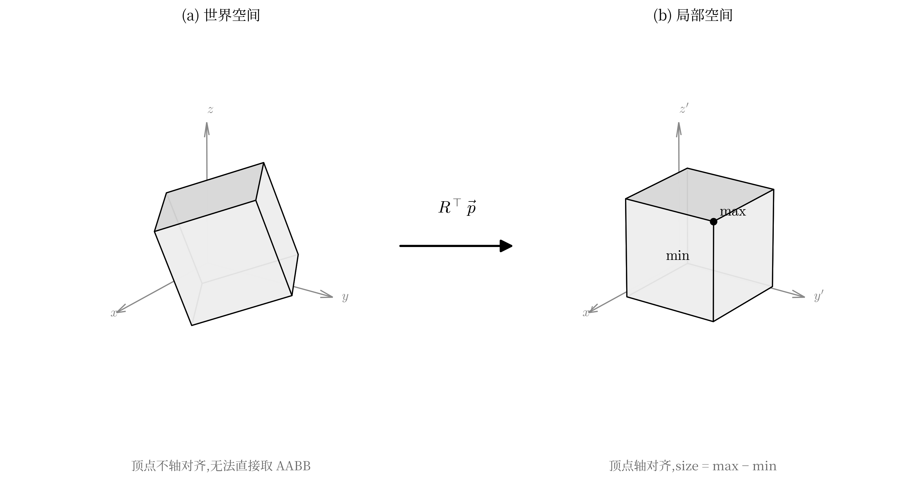
Transforming world space to a local collision box
Then the problem becomes simple. Taking the minimum and maximum Position(minXYZ, maxXYZ) on the three axes gives the collision box. Taking the midpoint of this collision box and transforming it back with rotation pivot in the Blockbench project. Decomposing the rotation matrix into Euler angles gives the original Blockbench rotation field. Finally, origin is obtained by subtracting half of size from pivot.
In Blockbench, each face's uv field is a start point plus a size: {u, v, u_size, v_size}, framing a rectangular area on the texture image.
After using min/max and write the UV back.
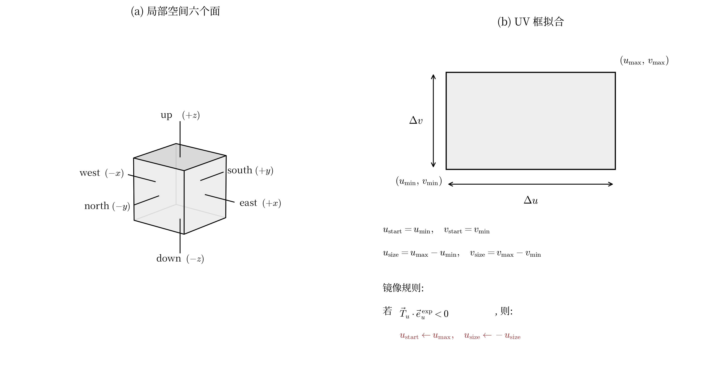
The direction definitions here differ because of coordinate-system conventions; the actual implementation may differ from the diagram.
Now we have obtained all data necessary for restoration: origin, size, pivot, rotation, and the UVs of each face. However, to make it recognizable by Blockbench, it still needs to be placed back into JSON. During the write-back process, we found that YSM's internal coordinate system is not completely consistent with Blockbench's: the X-axis direction is inverted, and rotation is stored in radians. If written back directly as-is, rendering collapses.
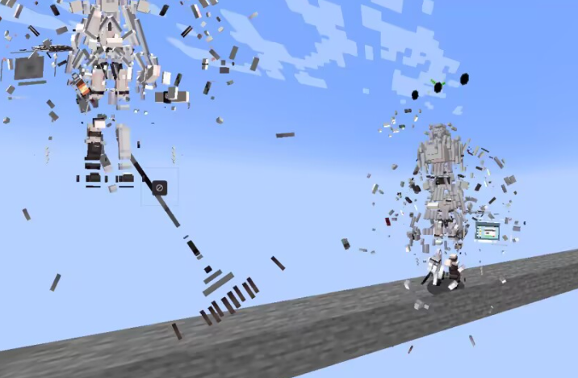
Therefore, a simple conversion is required:
xxxxxxxxxxb_json["pivot"] = { -parsedBone.pivot.x, parsedBone.pivot.y, parsedBone.pivot.z };Vector3D rot = { -rad2deg(parsedBone.rotation.x), -rad2deg(parsedBone.rotation.y), +rad2deg(parsedBone.rotation.z) };After this simple conversion, a standard Blockbench cube JSON is obtained:
xxxxxxxxxx{ "origin": [-4.0, 0.0, -4.0], "size": [8.0, 8.0, 8.0], "pivot": [0.0, 4.0, 0.0], "rotation": [0.0, 30.0, 0.0], "uv": { "north": { "uv": [16, 8], "uv_size": [8, 8] }, "east": { "uv": [0, 8], "uv_size": [8, 8] }, "south": { "uv": [24, 8], "uv_size": [8, 8] }, "west": { "uv": [8, 8], "uv_size": [8, 8] }, "up": { "uv": [8, 0], "uv_size": [8, 8] }, "down": { "uv": [16, 0], "uv_size": [8, 8] } }}Finally, according to the file structure in YSMJson, we write out all files and open them in Blockbench for testing:
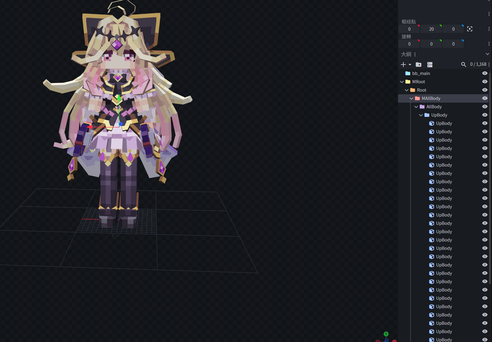
Successfully parsed. The model is correct, the textures are correct, and the structure is clear.
At this point, even the pure geometry vertices produced after pre-rendering in the YSM third-generation format can be restored into a standard project file that can be normally opened, edited, and re-exported in Blockbench. This means that YSM's complete-compilation, no-original-project scheme is not mathematically irreversible. Through this reverse-rendering algorithm, we successfully restored the tangled rendered vertex data back into a project.
We have now successfully decrypted the complete V3 format. However, YSM encryption did not appear in a single step; it went through long-term evolution and optimization.
Before V3, there were two generations, V1 and V2. However, YSM during the V1 and V2 periods had already been completely broken, and models were directly decrypted and leaked in batches. This was also the direct reason why the YSM author eventually decided to open-source the V1-era code and rewrite the entire encryption chain into the native layer starting from version 1.2.0.
If we want to cover decryption schemes for all versions, these historical versions are also worth studying. Version ownership can be quickly determined through file-header features. All three generations start with the magic number YSGP (0x50475359), but V1 and V2 place it directly at file offset 0, while V3 adds a UTF-8 BOM (EF BB BF) before it, making YSGP appear at offset 3. YSGP is followed by a 4-byte big-endian integer identifying the crypto version: 1, 2, and 3 correspond to V1, V2, and V3 respectively.
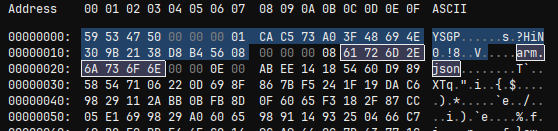
First-generation YSGPHeader
The V1 structure is quite simple. The first 8 bytes of the file header declare the magic and crypto version, followed by a 16-byte AES-128 key. For some reason this key is unused, because each resource has its own encryption key. After that comes the resource-entry list. Each entry contains the resource name, encrypted data length, AES key, AES IV, and then AES-CBC encrypted zlib-compressed data.
Simple analysis is enough to identify the structure:
xxxxxxxxxxHeader (24 bytes)Magic (4 bytes, uint32_le) - "YSGP" (0x50475359)Crypto Version (4 bytes, uint32_be) - 1AES Key (16 bytes) - unusedResourcesfor each resource:NameLen (4 bytes, uint32_be)FileName (NameLen bytes)DataLen (4 bytes, uint32_be)AES Key (16 bytes) - AES KeyIV (16 bytes) - AES-CBC IVEncryptedData (DataLen bytes) - Zlib Data
Each file has its own key, but both fields are written in plaintext inside the entry. This means decrypting a resource only requires reading the key and IV, then using standard AES to decrypt it, zlib-decompressing it, and writing it out according to the decoded file name.
As community decryption schemes were quickly released, the YSM author realized that V1 had been fully cracked. The author simply went with the situation and officially open-sourced the V1 source code under the name LegacyYSM.
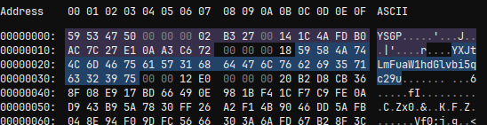
Second-generation YSGPHeader. The entry names can be seen to have been Base64-encoded.
V2 is actually similar to V1 in structure, but its key is no longer hardcoded in the file. Instead, it has a derivation scheme. A 32-byte EncryptedKey is stored, which is the real key encrypted by a derived key. To decrypt a resource, the derived key must first be obtained, then the real key must be decrypted with the derived key, and only then can the resource data be decrypted.
The derivation process is:
xxxxxxxxxxEncryptedData-> MD5-> Last 8 bytes, interpreted as a big-endian long-> JavaRandom(seed).nextBytes(16) generates RandomKey
For any insecure random-number generator, once the random seed is known, the output is predictable. The same seed produces the same random numbers, so this RandomKey is actually predictable. Using RandomKey to decrypt EncryptedKey yields the original key, which can then decrypt the resource. In this version, resource-entry names are Base64-encoded rather than plaintext. After decryption, they can simply be written out.
The structure is not very different from V1 and is also easy to identify:
xxxxxxxxxxHeader (24 bytes)Magic (4 bytes, uint32_le) - "YSGP" (0x50475359)Crypto Version (4 bytes, uint32_be) - 2AES Key (16 bytes) - unusedResources (repeated until end of file)for each resource:NameLen (4 bytes, uint32_be)FileName (NameLen bytes, Base64 String)DataLen (4 bytes, uint32_be)EncKeyLen (4 bytes, uint32_be) <- V2 addition, fixed at 0x20 (32)EncryptedKey (32 bytes) <- V2 addition, must be decrypted through the derivation chain to obtain RealKeyIV (16 bytes) - AES-CBC IVEncryptedData (DataLen bytes) - Zlib Data
At this point, we have successfully analyzed the encryption methods of YSM V1, V2, and V3 (including all subformats), and have a scheme for restoring them to original Blockbench projects.
If we only look at .ysm file decryption, we have actually only seen half of YSM's security mechanism. Decrypting local .ysm files alone is not enough, because some models exist only on the server. What is delivered to the client is only an encrypted cache file, and it does not use the encryption process discussed earlier.
YSM's network communication system is based on CustomPayload (C17/S3F). By registering a custom handler in the Netty channel inside NetworkManager, we can directly obtain the packet object, and therefore obtain the raw packet data.
Observing the first packet sent by the server after entering the server, we find that it is also encrypted. Its key must be known, otherwise communication cannot be established. By setting breakpoints in the server-side writePacket section, we can trace all the way to the native method, where a 56-byte hardcoded constant can be seen:
xxxxxxxxxx{ 0x0F, 0xC7, 0x7E, 0xF3, 0xF4, 0xB8, 0x35, 0x3A, 0xA2, 0xBA, 0x7F, 0xD3, 0x17, 0x79, 0x46, 0x8E, 0x65, 0x42, 0xD0, 0x98, 0x8A, 0x9B, 0xB0, 0x19, 0x80, 0x4F, 0x81, 0x56, 0x36, 0x6A, 0x12, 0x62, 0xBE, 0x0E, 0xE5, 0xAD, 0x47, 0x01, 0xD4, 0x5E, 0xE4, 0xEB, 0xFB, 0x36, 0xCB, 0x47, 0x42, 0x98, 0xF9, 0xE5, 0x7A, 0x5C, 0x3C, 0xDB, 0x2C, 0x76};56 bytes is exactly the 32-byte key plus 24-byte IV required by XChaCha20 in the previous encryption process. Therefore, it is very likely that this part of the encryption also reuses the model-decryption XChaCha20 + MT19937 XOR pipeline. After decryption, a structure of PacketId + 56-byte key is obtained. PacketId is 0x01, and this is the S2C key. Using the same process, this key decrypts the client's reply, yielding PacketId 0x02 and a 56-byte key, which is the C2S key. All subsequent communication is encrypted with the corresponding directional key, and the process remains the same.
After the handshake and key-exchange process is completed, the client requests a model from the server (PacketId 0x04), and the server returns it in chunks through PacketId 5. This pair of packets has a relatively conventional structure: a UUID indexes the model, then it is split by chunks, with offset and length attached. The client reassembles the complete file by offset and stores it as a cache file.
However, the reassembled file also appears encrypted rather than plaintext. Looking at the packet log, PacketId 0x03 performs another key-pair distribution, which we call ServerCacheKey and ClientCacheKey. Observation shows that the model data distributed by the server and the chache file written to disk are actually different. Although both are encrypted with ServerCacheKey, after the client receives the model ciphertext, it first decrypts it with ServerCacheKey into plaintext, then re-encrypts it with ClientCacheKey before writing it to disk.
Thinking carefully, this seemingly confusing operation is actually an anti-copy measure. ServerCacheKey is controlled by the server in each session, while ClientCacheKey is dedicated to a specific client. Neither appears directly on disk. The cache file contains only ciphertext encrypted with ClientCacheKey, and ClientCacheKey is logically bound to the client. The server only distributes it after verifying certain things, at least verifying that it is the same client. Even if someone copies the complete cache file to another machine, without the same client's ClientCacheKey, these files cannot be decrypted.
Returning to the model distributed by the server itself, after decrypting it with ClientCacheKey, plaintext can be obtained. Its structure is no different from a standard encrypted YSM file, except that it lacks a YSGPHeader. This header is not necessary. Reusing the previous decryption flow is sufficient to decrypt the server model.
At this point, we have completed a full reverse engineering of YSM's three generations of encrypted formats and network communication protocol.
Our restoration scheme covers every encrypted format since the birth of the YSM project: V1 (standard AES-CBC + zlib), V2 (adding an MD5 + JavaRandom derivation layer), and all V3 subversions (format < 4, 4 <= format <= 15, format > 15). We can process any historical or current .ysm file.
For the case where models in YSM's third generation are pre-rendered into pure vertices and the project-layer structure is completely erased, we designed a chained derivation scheme. From data containing only normals, vertex positions, and UVs, it restores origin, size, pivot, rotation, and the six face UV boxes, exporting a standard project that can be normally opened, edited, and re-exported in Blockbench. This means that YSM's protection technology based on complete compilation and no original project is not mathematically irreversible.
We mapped out YSM's Custom Payload channel protocol, reconstructed the hardcoded bootstrap key, session-key handshake, and the roles of Packets 1 through 5, and untangled the chain by which ServerCacheKey/ClientCacheKey double encryption implements copy protection for the client's local cache. This restoration means that we can not only decrypt local files, but also intercept and decrypt all models distributed on demand by the server.
Based on all the research results above, our team implemented and open-sourced our project: YSMParser, an independent YSM file parser. Starting from encrypted .ysm files, it executes the full pipeline of decryption, decompression, deserialization, reverse rendering, and JSON assembly, then outputs a Blockbench project directory.